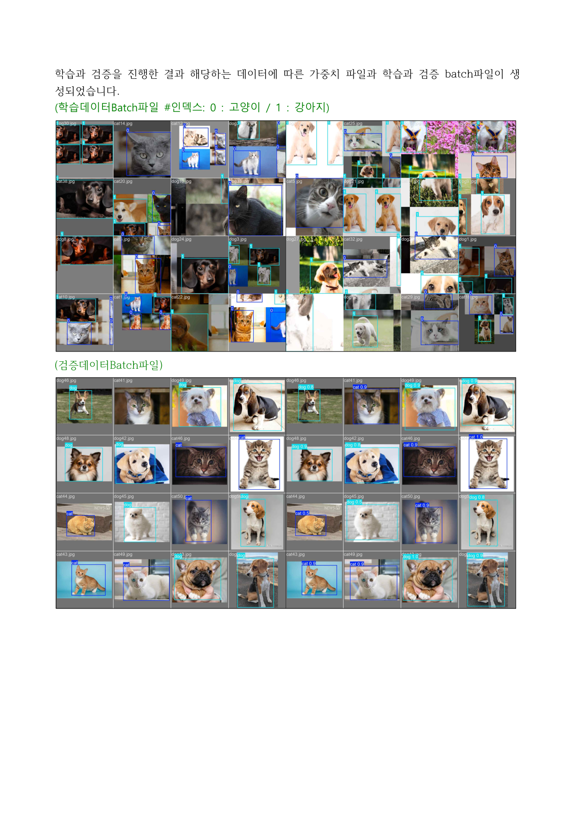
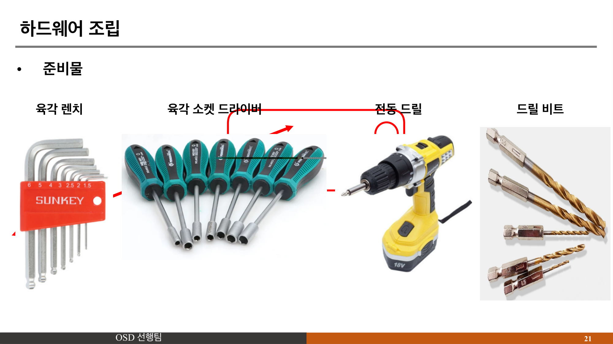
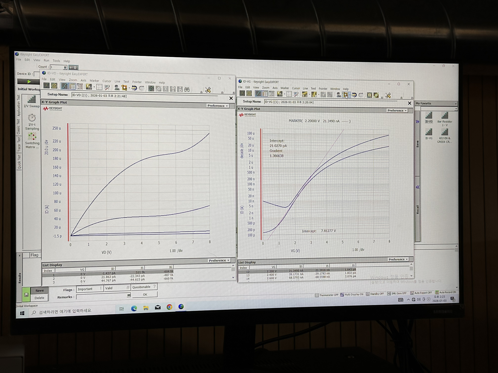
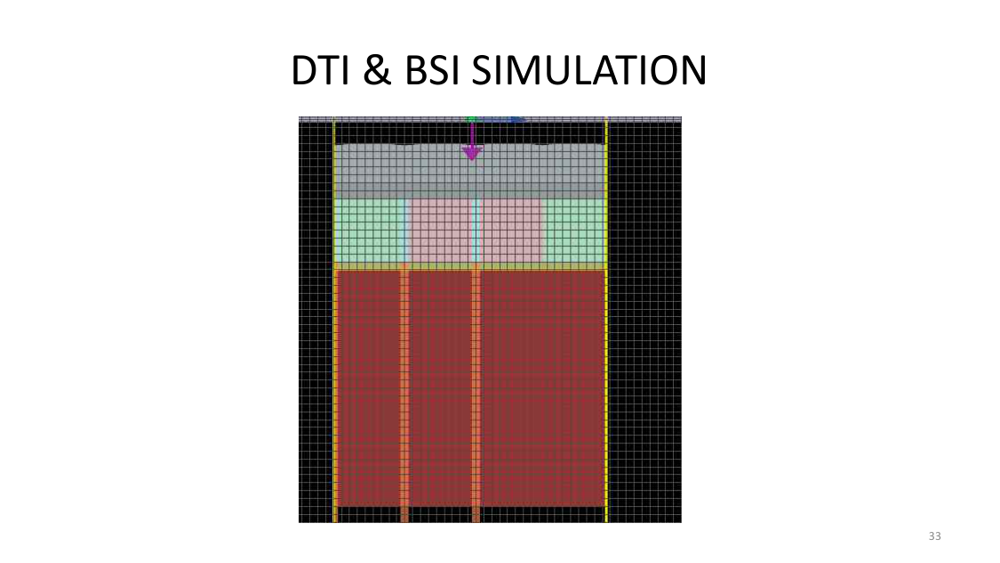
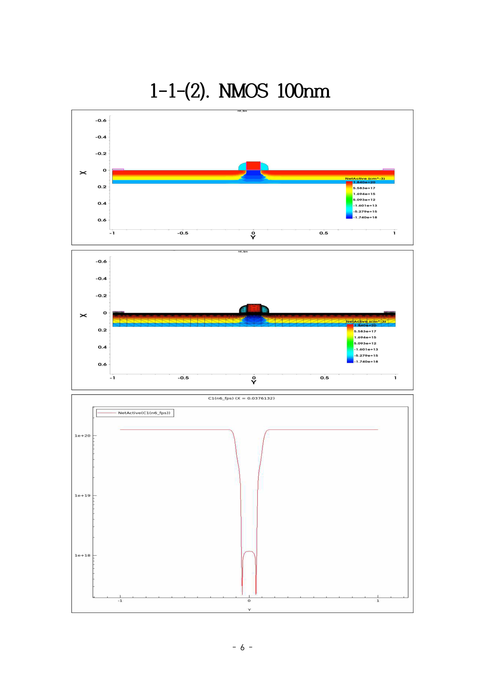

부경대학교 전자공학을 전공하며 반도체 공정, 광학 시뮬레이션, 임베디드 시스템까지 폭넓은 엔지니어링 경험을 쌓아왔습니다.
드론 제작에서 오실로스코프로 GND 루프를 진단하고, NMOS 공정에서 22개 Die의 I-V 데이터로 오버에칭 원인을 도출한 경험처럼, "감이 아닌 데이터로 문제를 분석하는 것"이 제 엔지니어링 철학입니다.
현재 한국 폴리텍대학교 하이테크과정 반도체융합기계과에서 장비 유지보수 및 PLC 제어를 학습하며, 반도체 장비 엔지니어로서의 전문성을 강화하고 있습니다.
반도체 장비 엔지니어에게 필요한 계측, 설계, 시뮬레이션, 제어 역량을 갖추고 있습니다.
각 프로젝트를 클릭하면 문제 → 분석 → 해결 → 결과의 상세 과정을 확인할 수 있습니다.

YOLOv11 기반 반려동물 인식 AI와 Raspberry Pi-Arduino UART 통신으로 맞춤 사료를 자동 지급하는 IoT 시스템
자세히 보기 →
오실로스코프로 GND 루프를 진단하고 납땜으로 해결한 측정 기반 트러블슈팅 프로젝트
자세히 보기 →
22개 Die I-V 측정으로 습식 식각 오버에칭 원인을 도출한 반도체 공정 실습
자세히 보기 →
Ansys FDTD로 DTI 구조를 최적화하여 광효율 13.6% 향상을 달성한 캡스톤 프로젝트
자세히 보기 →
Sentaurus로 CMOS 전 공정을 시뮬레이션하고 n-well 농도 최적화로 정상 동작을 검증
자세히 보기 →언제든 편하게 연락 주세요.